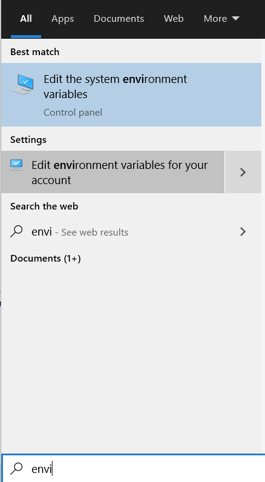

- Note
- The steps on this page need to be done once on a given host machine
Host PC Requirements
To build applications using this SDK, one needs below host PC machine
- Windows PC
- Windows 10 64bit
- Minimum 4GB, >8GB RAM recommended
- At least 10GB of hard disk space
- Linux PC
- Ubuntu 18.04 64bit or higher
- Minimum 4GB, >8GB RAM recommended
- At least 10GB of hard disk space
Download and Install the SDK
- Download the SDK installer and install at below path on your PC
- Windows, C:/ti
- Linux, ${HOME}/ti
${SDK_INSTALL_PATH} in this user guide refers to the path, including the SDK folder name, where the SDK is installed. Example, in Windows, ${SDK_INSTALL_PATH} will refer to the path C:/ti/mcu_plus_sdk_{soc}_{version}- You can also browse, download and install the SDK using TIREX as shown here, Using SDK with TI Resource Explorer.
Download and Install Additional SDK Tools
SysConfig
- The SysConfig download home page is, https://www.ti.com/tool/SYSCONFIG
- Download SysConfig 1.15.0 from below direct links,
- Install at below path,
- Windows, C:/ti
- Linux, ${HOME}/ti
Python3
- Attention
- It is important to install Python 3.x. If you have Python 2.x installed, then additionally install Python 3.x and make sure the command python or python3 indeed points to Python 3.x
-
All commands mentioned below should be typed in
cmd.exe command console in Windows and bash terminal in Linux.
- Python scripts are used for below functionality in the SDK,
- Flashing files to the flash on the EVM via UART.
- Booting application on the EVM via UART
- Flashing files is the most popular reason why you would need python, so its strongly recommended to install it.
- In Windows,
- Install python from, https://www.python.org/downloads/windows/
- Confirm python is installed by typing below in a command prompt, make sure you see 3.x as the version
C:\> python --version
Python 3.9.1
- If above command fails, then add path to Python to your environment "Path" variable, by default python is installed at below path
C:\Users\{your username}\AppData\Local\Programs\Python\Python39
- To add a new path to your environment variables, goto "Windows Task Bar Search" and search for "environment variables for your account"

Environment Variables For Your Account
- Click on "Path" variables, click on "Edit", click on "New"
- Add the path to the folder where python in installed.
- It is strongly recommended to move the path "up" in your path list by clicking the "Move Up" button until the path is at the top of the list.
- Click "OK" to save the settings
- Close your Windows command prompt and reopen it and then check if python is visible by doing below
C:\> python --version
Python 3.9.1
- Check if the python package manager "pip" is installed, by default pip should be installed along with python.
C:\> python -m pip --version
pip 21.0.1 from C:\Users\{your username}\AppData\Local\Programs\Python\Python39\lib\site-packages\pip (python 3.9)
- Install below additional packages via "pip" that are needed for the flashing tools. If you are behind a corporate firewall make sure to pass the server name and port for the proxy as shown below. If proxy is not needed keep
--proxy= as blank. C:\> python -m pip install pyserial xmodem tqdm --proxy={your proxy server web-link and port}
- In Linux,
OpenSSL
- Note
- You need to install OpenSSL only if you plan to rebuild the SBL application. For initial evaluation on TI EVM, you do not need to rebuild the SBL and you can use the pre-built SBL's for TI EVM. In this case, at least initially in your development, you don't need OpenSSL and you can skip this step.
PRU-CGT
- Attention
- You MUST install PRU-CGT if trying to build PRU firmware.
- PRU-CGT-2-3 (ti-pru-cgt) should be installed at:
C:/ti/ when working with PRU firmware development.
Mono Runtime
- Attention
- You MUST install mono runtime only if you're on Linux
Code Composer Studio (CCS)
To download, install and setup CCS, follow instructions on this page, Download, Install and Setup CCS .
Download and Install Additional SDK Tools
TI CLANG Compiler Toolchain
- Download TI CLANG compiler toolchain 2.1.2.LTS from below link
- Install at below path,
- Windows, C:/ti
- Linux, ${HOME}/ti


 1.8.20
1.8.20